The Basic Flow of an RSG Run and an Intro to Common Terminology so you can become a
Pro Yourself!
General terminology used to talk to other runners
MCSR - Minecraft Speedrunning; note that MCSR means Minecraft speedrunning, NOT Minecraft speedrunning ranked!
GL - good luck
HF - have fun
GG - good game
NT - nice try
PB - personal best
WR - world record
TAS - stands for tool-assisted speedrun, but is often used to describe a play or moment
that was
executed almost perfectly
Tech - technique; a good strategy
Strat - strategy
Choke (verb) - to mess up a (relatively easy) strategy or play
RSG - stands for random seed glitchless, a category of Minecraft speedruns where the
seed
generated
is completely random
FSG - stands for filtered seed, where the seed generated has been filtered through to
find a
seed
that is optimal for a fast run. This is the type of run that people who play ranked are doing, but they are
ineligible for
the
leaderboard do to other modifications for ranked
RNG - used to describe the luck in a seed
Specific terms used to talk about a speedrun
Seed - refers to the world that was generated for a run
Coords - coordinates
RD - render distance
OW - overworld
DT - desert temple
BT - buried treasure
RP - ruined portal
Fastion - refers to a bastion that overlaps with a Nether fortress
Triple - refers to a rampart in a bastion that has three chests (one single chest and one
double
chest)
Single - refers to a rampart in a bastion that has one single chest
Obby - obsidian
Fort - Nether fortress
Strays - refers to the blazes that spawn in the Nether fortress naturally, away from a
spawner
SH - stronghold
Nav - navigation, typically in reference to finding the portal room in the stronghold,
moving
through terrain, or finding a spawner in the fortress
PR - portal room
Hunger reset/death reset - a strategy where speedrunners set their spawnpoint and then
intentionally
die to reset their hunger, eliminating the need for food
The flow of a typical speerun:
The Overworld
Where the player spawns in, where runners are, hopefully near one of these five structures:
Village
Desert Temple
Shipwreck
Ruined Portal
Buried Treasure
Each seed type has their own strategies to optimize the run, but in all seed types, runners are
typically
looking to find the following:
Seven iron ingots - three for a bucket, three for an iron pickaxe, and one for a flint and
steel
Wood - to craft things like an iron pickaxe, a boat, a crafting table, etc.
Food - many seeds will have some kind of food (ex: a shipwreck has a food chest); if not,
runners
may kill nearby animals for food, or just go without food
Blocks - if possible, runners will look for some way to collect blocks to traverse terrain
Gravel - runners will collect gravel and break it repeatedly for the 1 in 10 chance to get
flint,
which allows the runner to craft flint and steel
Water - to fill the bucket with
Once the runner has the items they need, they will search for a lava pool, where they will use
their
bucket
of water and their blocks to make a Nether portal, so they do not need a diamond pickaxe. Once
the
runner
enters the portal, they move to the next split
The Nether
The second and typically the shortest split of a speedrun. As soon as runners enter,
they
open the debug screen, and they look at the "E" value to find the direction of nearby entities,
looking for a bastion.
When the runner finds the E value spike, they traverse the Nether terrain using blocks, their
pickaxe, and/or a boat.
The Bastion
As runners approach the bastion, they identitfy it as one of four bastion types:
Treasure
Bridge
Housing
Stables
Depending on the bastion type, the runner will perform a different route where they collect the
bastion's
gold blocks, attract piglins into a hole, and throw piglins gold ingots to barter and collect
trades.
The
trades runners are looking for are:
~20 Ender pearls - for faster traveling and to make eyes of ender, necessary for entering
the
end
20 Obsidian - to create one Nether portal for the blind (where runners calculate where the
stronghold is) and one Nether portal to enter the stronghold
2-3 Fire resistance potions - to traverse the Nether without worrying about falling in lava
and
to
fight blazes without having to worry about their fire attacks
~80 String - to create wool to make beds for clearing spawners and for defeating the Ender
Dragon
~6 Crying obsidian - to make respawn anchors to kill the Ender Dragon
~32 Glowstone dust - to make glowstone to create and charge respawn anchors
While runners wait for these trades, they will look for the Nether fortress if they haven't seen
it
already.
If the fortress isn't in sight, players will use a strategy called piedar, where they use the
debug
piechart
to estimate how far and in what direction the fortress is. Once they have their trades, runners
traverse
the
terrain to the fortress
The Nether Fortress
Once runners enter the fortress, their goal is to traverse the fortress to
find
one of two blaze spawners. To find a spawner, runners first look for the "good part" of the fortress
if
they aren't already there. Once in the good part, it can be difficult to find the blaze spawner, but
runners will often listen for blazes and go towards the sound or use other strategies to find the
spawner. Once the spawner has been located, runners will kill blazes (which have a one in two chance
of
dropping a blaze rod) until they have 6-7 blaze rods. Once they have the blaze rods, runners build
their
next Nether portal and re-enter the overworld
The Blind
Once runners re-enter the overworld, their priority is to locate the stronghold. Most
runners use a program called NinjaBrain Bot (a type of calculator), where runners can throw an ender
eye,
copy the angle it goes towards, then look at their calculator to get the coordinates and distance of
the
stronghold. Once the runner has these coordinates, they re-enter the Nether. The runners then
traverse
the Nether terrain once again to reach the calculated coordinates, usually using extra ender pearls
to speed up their navigation. When they real the calculated coordinates, they build the third and
final
Nether portal to enter the stronghold.
The Stronghold
Once in the stronghold, the runner wants to find the portal room as fast as possible, which has 12
portal
frames that can be filled with ender eyes to open the End portal. To find the portal room, runners
will
use
a strategy called pie-ray, where they open the debug piechart and look for a spike (which they have
learned to recognize in practice), then follow corridors in that direction until they find the
portal
room. Once in the portal room, runners may hunger reset, organize their items to prepare for a
strategy to defeat the Ender Dragon, then fill in the portal and enter the End.
The End
In the final split of the speedrun, runners want to kill the Ender Dragon. There is a
variety
of strategies that runners use to kill the Ender Dragon, including the zero cycle, the one cycle,
ground zero, and half bow. Most strategies involve explosives (beds and respawn
anchors) and a bow. Once the Ender Dragon is dead, the player enters the End fountain, and as soon
as
the end credits roll, the timer stops
How Do They Do It?
Common strategies to get through a run! Click on an image to learn more!
Fast
Portal: To avoid having to find diamonds,
speedrunners use a bucket, a pool of lava, and a few blocks to make a Nether portal without having
to mine a single piece of obsidian! The strategy is relatively easy and can be done in as fast as 5
seconds, if you're really good. This strategy is a huge time save in any speedrun.
Eray: To
find a bastion once entering the Nether,
speedrunners will turn their FOV as low as possible to 'zoom in' and then will open their debug
screen and look at the E value, or the number of entities that are loaded in where they are looking.
The runner looks around to find where the E value jumps up, which means there are more entities and
hopefully a bastion in that direction, and traverses the terrain in that direction.
Treasure
Bastion: This is a treasure bastion, which is easily
identifiable by its shape and has one main route that speedrunners use. Runners start on the bridge
that connect the two sections. They collect the two gold blocks on the bridge, than run up towards
the ramparts, or the taller part of the bastion. They lure piglins up then trap them in a hole. The
runner collects more gold blocks at the top of the ramparts and will either perform glowdar, a
sub-strat of piedar, or will break the spawner in the other side of the bastion while trading with
the piglins.
Housing
Bastion: This is a housing bastion, which is
identifiable by its two ramparts and typically allows for the fastest bastion split. Housing has two
main routes, one that starts at the bottom (manhunt) and one that starts at the top (top-down). Both
routes end with the runner in the bottom of housing, where they can collect more gold blocks and set
up a piglin trading hole.
Bridge
Bastion: The bridge bastion is easily identifiable by
the challice of gold on the end of the 'bridge' of the bastion. The bastion has four variations
which determines what route the speedrunner will use, but speedrunenrs typically use a variation of
a route called Donkey Kong or a route called Soog Route. Usually, the runner will end up in one of
the triple ramparts (if there is one), will they will trade gold with piglins.
Stables
Bastion: The stables bastion is the most variable
bastion, identifiable by its three ramparts. The stables bastion also have two 'gaps' which can be
good or bad depending on whether or not they have gold in them. Given the variability in the stables
bastion, there are many routes that can be used, the most well-known being triple-to-gap and double
triple.
Piedar:
Piedar is a strategy used to locate a mob
spawner, usually for finding a fortress. The runner will open their debug pie chart, then turn their
render distance up or down to figure out how many chunks away the mob spawner is. After that, the
runner lowers their render distance by four, then turns it up by three, then closes and opens the
pie chart again. They are then able to turn on chunk borders and cross the chunk borders to
determine the general direction of the fortress.
Blaze
Bedding: Blaze bedding a strategy that speedrunners
use to quickly clear out a blaze spawer. The more space there is around a spawner, the more likely
you are to get a '4 spawn' of blazes, which is the highest number of blazes you can get per spawn.
Blaze bedding is an easy strategy where the runner uses one or two beds (or TNT if they have it) and
blocks like Nether bricks to clear out the area around the spawner and increase spawn rates.
Triangulation: To locate the stronghold, a runner must use
triangulation by throwing two eyes and calculating the distance. However, doing this by hand takes a
while and would cause major time loss, so a speedrunner known as Ninjabrain created Ninjabrain Bot.
This calculator allows for a speedrunner to throw an ender eye, look at it, and copy the angle of
the ender eye into the calculator. After doing this a few times (depending on your accuracy), the
calculator gives the coordinates of the stronghold. There is a more advanced version of this, Boat
Eye, which allows top runners to calculate the distance with only one eye, but it requires further
set up and additional downloads.
Preemptive: Once the runner is in the stronghold, they
need to find the portal room, which can take a very long time if you are running around blindly.
Luckily, there is a strategy called preemptive navigation. In this strategy, the speedrunner turns
their render distance down to 8 chunks and their entity distance down to 50%, then opens their debug
pie chart. They turn their FOV all the way down, then look around while quickly closing and opening
the pie chart. The runner is looking for one of a few 'spikes,' which indicate the location of a
nearby mob spawner, something only the portal room has.
Zero
Cycle: The quickest way to defeat the Ender Dragon
is with a strategy called the zero cycle. The strategy is based in the fact that when you enter the
End, the Ender Dragon is circling around a tower, and if the runner is fast enough, they can kill
the dragon while it is in the air. There are many variations of this strategy depending on the tower
the dragon is circling and how tall the tower is. The runner is able to throw an ender pearl up the
tower, then build up to a certain height to blow up the Ender Dragon using beds and respawn anchors.
This strategy is very fast, but very difficult.
One
Cycle: The one cycle is the easiest and fastest way
to kill the Ender Dragon. When the runner enters the end, they will throw an ender pearl towards the
fountain, where they make a simple set up out of obsidian or a similar block. The runner then moves
away from the fountain and waits until 'the snap,' or when the dragon perches. Once the dragon
perches at the fountain, the speedrunner must ender pearl or run over and blow up a bed or respawn
anchor before the dragon gets too low. The speedrunner can then continue to blow up well-timed
explosives to defeat the Ender Dragon.
What does Competitive Minecraft Speedrunning Look Like?
A guide to a season of Ranked and playoffs
Each season is split into four, month-long phases. At the beginning of the
first phase,
players are
required
to
complete a few matches in order to be placed (which means they are given an elo which
corresponds to
a
specific
rank). Once placed, runners continue to play matches throughout the phase. At the end of
each phase,
based
on
their placement on the leaderboard, runners will earn a certain amount of phase points. As
the
phases
progress,
players can earn more and more phase points. After phase two, the top 100 players on the
phase point
leader
board are invited to the Midseason Showdown, where they have an opportunity
to earn
more
phase
points.
At the end of phase four, the season reaches its end, which means it's time
for the main
bracket,
more
commonly
known as Playoffs. A total of 16 players qualify for Playoffs: the 12
players with
the
most
phase points automatically qualify and are seeded 1 through 12 accordingly, and the last
four
players,
who
are
seeded 13 through 16, will qualify through Last-Chance Qualifiers.
All players in the top 100 on the phase point leaderboard (minus the top 12
who
automatically
qualified
for
Playoffs) are automatically invited for the Last-Chance Qualifiers, more
commonly
referred
to
as LCQ. Players in LCQ play up to 10 seeds, each ending after 15 minutes or when 24 players
finish,
and
the
finisher gain points based on their placement. There are eliminations in seed 3 (any player
with 0
points),
seed
5 (the bottom 50% of remaining players are eliminated), seed 7 (all but the top 10 players
are
eliminated),
seed
8 (the top 8 move one), seed 9 (the top 6 move on), and seed 10 (the top 4 move on), which
leaves
the
four
winners, who become seeds 13 through 16 in Playoffs.
To determine who will play who in Playoffs, seeds 1 through 7, in order
starting at 1, will
pick from
seeds 8
through 16.
Playoffs starts with the rounds of 16 (as there are 16 players at this point
in the
bracket), where
each
pair
plays a best of three to determine who will move on. The players who win move on to the
quarterfinals,
where
they will play another best of three. The winnders of the quarterfinals move on to the
semi-finals,
another
best
of three. The losers of the semi-finals compete for third place in a best of three, and the
winners
of
the
semi-finals move into the finals, where they play a best of 7. The player who wins finals is
awarded
$3,000,
second place receives $1,500, and third place receives $500.
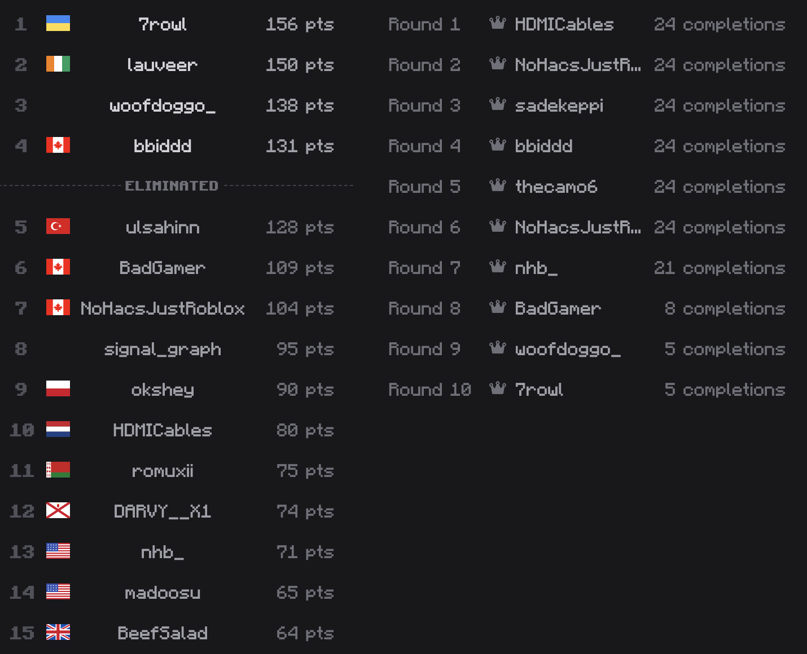
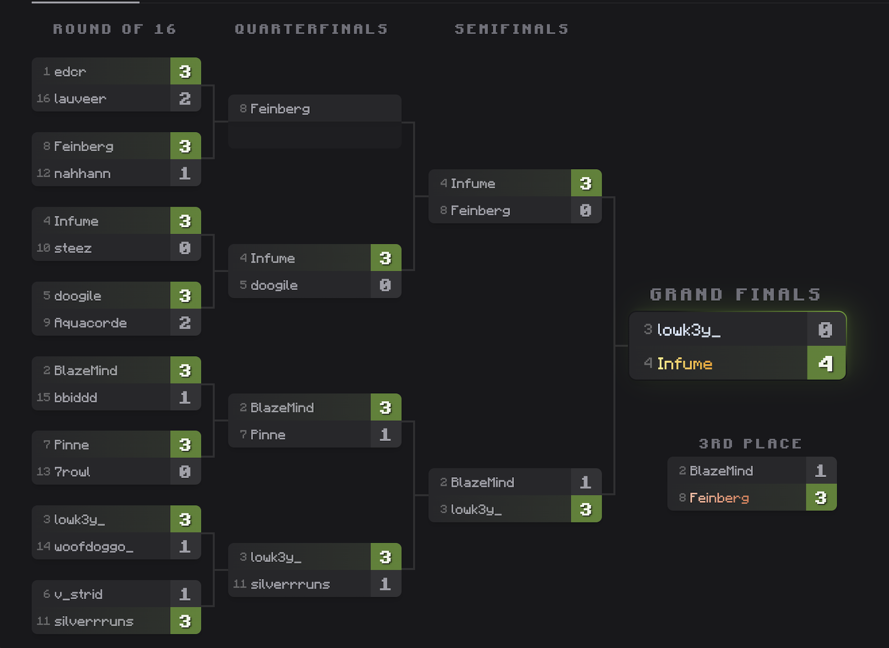
Notable Speedrunners
A table of basic information about top runners; click on a name to learn more!
One of the most highly-technical Ranked and Random Seed Glitchless speedrunners
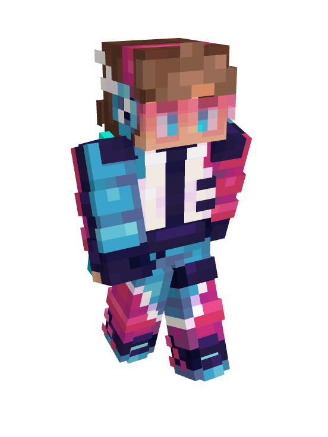
Feinberg
Feinberg has been speedrunning Minecraft since late 2020, originally playing
RSG before switching to primarily All Advancements (AA), setting his first world record
of 4
hours and 38 minutes in November of 2021. Since then, Feinberg has beat his own world
record
35
times, cutting his time down to 2 hours and 5 minutes, and just recently began AA runs
again.
Outside of speedrunning, Feinberg has won Minecraft Championships 3 times and has not
placed
outside of the top 4 since his debut in the Season 4 kick-off in 2024.
You should watch Feinberg if you like someone who plays Minecraft very strategically,
whether
it's speedrunning or an event. Feinberg is relatively low-energy with moments of energy
in
certain scenarios and can be very sarcastic and critical, so if you are looking for
someone
with
more positive vibes, try reading about another runner.
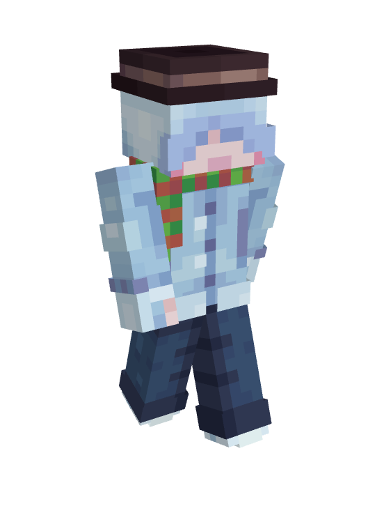
Hackingnoises
Hackingnoises, also known as Hax, began speedrunning in 2021 but really started
to gain traction in the community when he started climbing the MCSR Ranked leaderboards
and
eventually won playoffs in seasons 8 and 9. Hax has a reputation as a top-performing
speedrunner
in the community, having the most podium finishes in playoffs and a consistently low
ranked
average time.
You should watch Hackingnoises if you are looking for good vibes and fun times. Hax is a
very
high-energy player who is constantly making jokes and having fun. Hax also plays games
outside
of Minecraft from time-to-time, so if you are looking for someone with more variety, Hax
may
be
a good content creator for you.
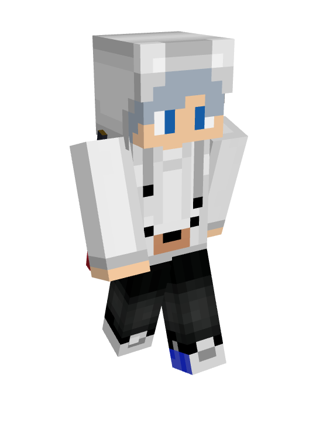
Infume
Infume started his speedrunning career by speedrunning versions of Minecraft
that came out before version 1.9, occassionally playing version 1.16 to do All
Advancements
runs
in, which he currently holds the fifth fastest time for. Infume eventually switched over
to
MCSR
Ranked, where he began making a name for himself as he climbed the leaderboard. Notably,
Infume
was the first player to complete a run with a sub-6 time and just recently beat his own
sub-6
time with a time that is five seconds faster. He has played in playoffs since season 7
and
just
earned his first first place finish in season 11.
You should watch Infume if you enjoy a consistent speedrunner. Each stream is different:
sometimes he tries RSG, other times he is grinding the Ranked leaderboard, sometimes he
is
in
call with other people. If you are looking for someone who pushes his skills to the max
while
still having fun, you should check out Infume.
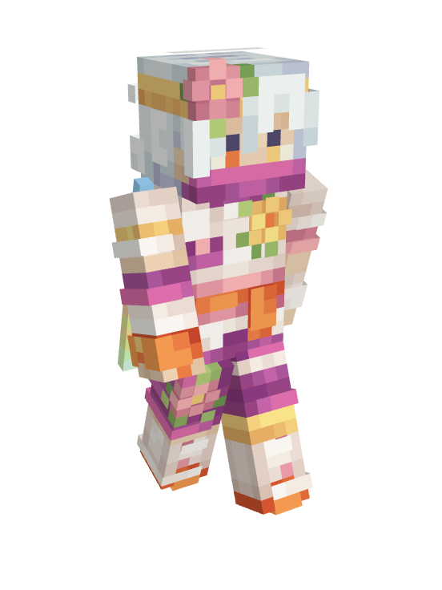
Silverrruns
Silverrruns, or just Silverr, is a prominant speedrunner in the MCSR community.
He started out playing small games for content creation before switching to Minecraft
speedrunning in early 2021. Since his start as a speedrunner, Silverr has played in most
playoffs, winning the first every MCSR Ranked playoffs in season 1. He is known for his
strong
mechanics, his great decision-making skills, and his low average times.
You should watch Silverrruns if you enjoy something more chill or relaxed. Silverr isn't
the
type of content creator to wake you up by screaming during a stream; he is typically
very
calm.
Still, he is very funny and entertaining to watch while keeping a relaxed energy, but
may
not be
the content creator for you if you enjoy something more energetic.
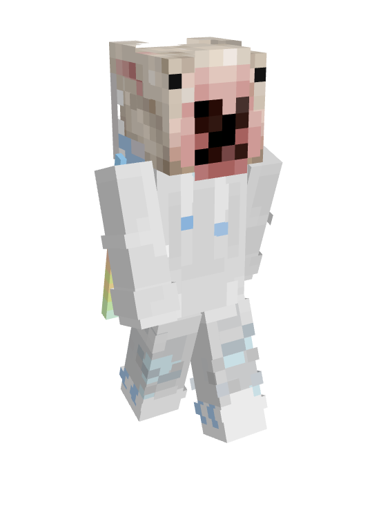
Doogile
Doogile was originally known for his incredible bridging skills in Hypixel Bedwars
settings,
showcasing extremely difficult techniques such as moonwalking and telebridging where use
his
drag-clicking skills. As bridging innovation slowed down in 2022, Doogile switched to
speedrunning, which he could apply the skills he learnt from bridging. Since then,
Doogile
has
participated in every playoffs and is one of the most consistent players in the
community.
You should watch Doogile if you prefer a stream that is more focused. Doogile focuses
heavily
on
whatever run he is doing, typically RSG or Ranked matches, to optimize his mechanics and
efficiency. Doogile showcases high mechanics and difficult techniques that are cool to
watch,
whether you are a new player or a seasoned runner.
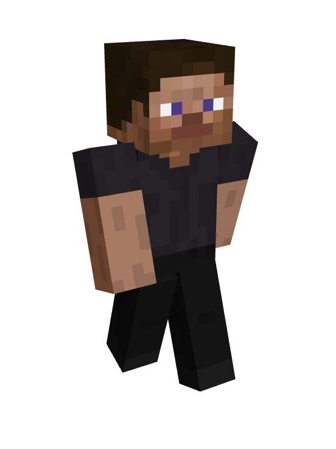
Lowkey
Despite his young age, Lowkey has been in the MCSR community for a long time. Lowkey is
known
for
playing aggressively, pushing for the fastest time possible. Outside of his incredible
mechanics
and insane top speeds, Lowkey is known as one of the most accomplished players in the
community,
achieving an RSG world record and multiple Ranked playoffs wins; in fact, he won his
first
playoffs in season 2 when he was 14 years old.
You should watch Lowkey if you are looking for a very locked in player. His streams tend
to
be
very quiet, with more focus on his incredible gameplay as opposed to his personality. If
you
are
a beginning player, you may want to watch someone else at first, as Lowkey's gameplay
can be
very fast paced, and he makes many plays with little to no explanation, so you may not
learn
as
much from Lowkey as you would another player.
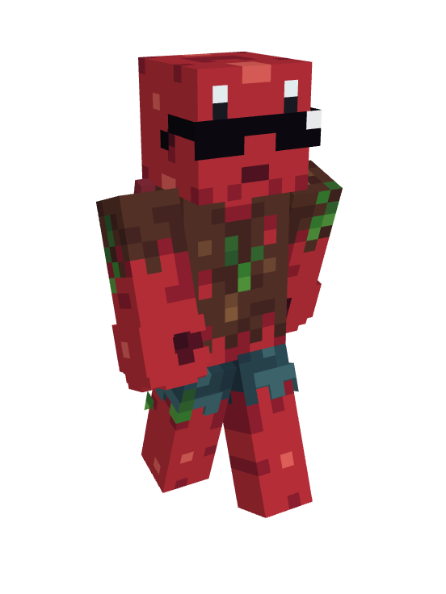
Skycrab
Skycrab is predominantly an RSG player, hopping onto Ranked from time to time to try to
snag
a
spot in playoffs, who has reset thousands of times in hopes of beating the RSG world
record.
Skycrab saw his rise to fame after posting what is commonly referred to as the "6:17
choke,"
where Skycrab was seconds away from achieving the RSG world record before dying in the
fountain
to an enderman. Skycrab never quit, though, and just over a year after his choke,
Skycrab
finally did get the RSG world record with a 6:39.
Skycrab typically streams his RSG runs (with streaks of playing Ranked occassionally),
meaning a
lot of the time in his streams is dedicated to resetting until he finds a seed that
looks
playable. However, Skycrab is entertaining, which makes up for the down time. Skycrab
takes
risks in his runs, as most RSG players do, so if you are looking to learn how to safely
finish a
run, he might not always be the best to watch. Still, his runs are fun to watch, and you
can
still learn from them.
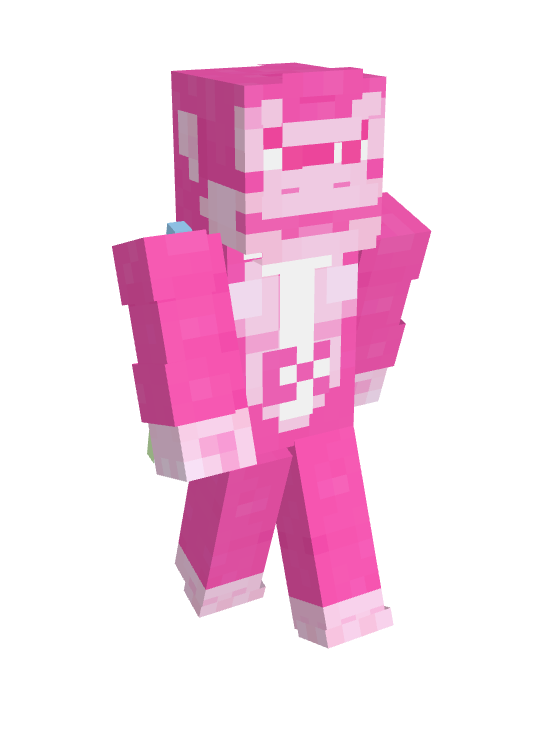
Big Big Mongey
Rather than being known for fast times or perfect mechanical execution, Big Big Mongey,
or
just
Mongey, is known for his creative, unconventional decision making. He showcases this
skill
in
his Ranked games and his DraftOut games, both of which he is on the top of the
leaderboard
for.
Mongey has a very unique gameplay style, whether he is facing a top-tier opponent in
playoffs or
a random opponent during a DraftOut game.
You should watch Mongey if you are looking for someone with a very unique play style.
Mongey
opens up a world of new strategies with his gameplay that new and seasoned players can
learn
from and take inspiration from. Mongey's streams are very funny but maintain a very
chill
vibe.
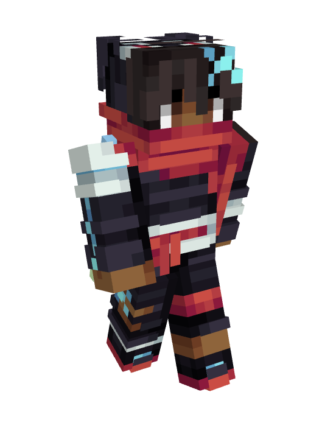
Aquacorde
Aquacorde is a very talented RSG and Ranked MCSR player. After thousands of RSG resets,
Aquacorde
recently completed his 100th sub-10 minute run, a feat not many players have achieved
even
once.
Aquacorde is a very aggressive and highly-mechanical player, pushing every run to the
limit.
His
skill has earned him a position in multiple Ranked playoffs and given him many low times
that
many could only dream of.
You should watch Aquacorde if you enjoy highly-focused speedrunning content with a
lighthearted
mood. While in games, Aquacorde tends to be very focused on the game, but when in queue,
Aquacorde is more talkative, showing his personality. If you enjoy a content creator who
balances fun with focus, Aquacorde may be good for you to watch!